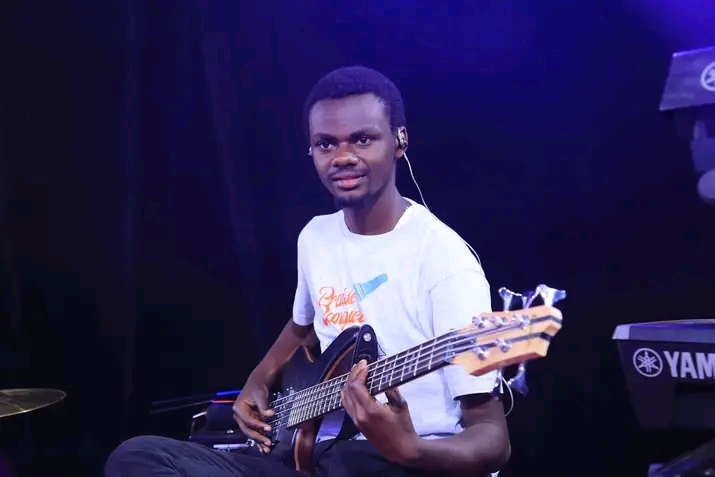

Step up the standard of worship.
To step up the worship standard in places of worship so that the body of Christ can grow a deeper and stronger relationship with God.
 THE ZIONERSLIVE MUSIC · KENYA
THE ZIONERSLIVE MUSIC · KENYAA Kenyan live music collective with a heart for worship, community and the moments that bring us closer.
The Zioners bring musicians together to create generous, spirit-filled live experiences.
Our sound grows from the people in the room: the voices, the energy, the reason we’ve gathered. We come prepared, listen closely and play with care. The result is never just a set list. It’s a shared moment.
Based in Nairobi and available to travel across Kenya, we work with churches, event teams and communities to shape music around each occasion.
Let’s meet ↗The Zioners Band is a model band whose purpose and assignment is to empower individuals and teams to step up their standards of service through musical excellence.
To step up the worship standard in places of worship so that the body of Christ can grow a deeper and stronger relationship with God.
We aspire to offer exposure and training to young talents and teams, helping them step up the standards of praise and worship in their respective stations of assignment.
Our desire is to see people experience deeper moments of worship, enhanced by musical excellence, preparation and service.
?But you have come to Mount Zion, to the city of the living God, the heavenly Jerusalem. You have come to thousands upon thousands of angels in joyful gathering.?
Hebrews 12:22

Pastor Dennis brings more than 20 years of ministry experience to Mwea People?s Church and leads The Zioners Band. His work in worship leadership, team coordination and musician mentorship supports the band?s vision of deeper worship and musical excellence.
Meet Pastor Dennis ↗
Come as you are.
Leave a little lighter.
Meet musicians identified in our photo archive.

Lead guitarist

Drummer

Keyboard

Rhythm section
Music with a purpose, delivered with warmth and sincerity.
We make space for people to join in and feel part of it.
Thoughtful preparation, flexible musicians and a sound shaped for your gathering.
THE ZIONERS BAND
Stepping up worship standards
Have a gathering in mind?
We’d love to hear about it.